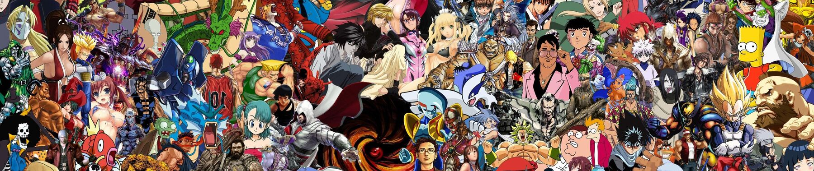
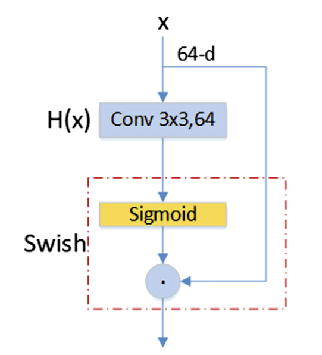

We tried in this model to colorize anime arts, It's already known that colorizing the line art, and choosing appropriate colors for the image; that represents the true story of the image is a very hard task and might take several hours, and maybe days; additionally, it requires professional artists. That's why we worked on a training deep learning model; that can learn the color palette for the image, and colorize appropriately in a matter of seconds, with no human help. Our model competes with the state-of-the-art models published in many papers. We proudly published our model online for any usage -Even commercially- with no penalty, but using our website might be limited only. Our model is based on a U-NET network; however, it's a bit modified from the original one, by utilizing a swish layer, which was firstly published by Ru-Ting Ye (Ye et al., 2019) We didn't use GAN for image generation training; although, we used VGG19 as visual perceptron, and used them in some way as a loss function; it generated great results, better than what we got after training GAN.
Note that the generated image might have different colors, however, colors are coherent and match the story of what the image tries to say.
 Usually, projects like such use dataset from danbooru , but we lacked the computational power to use their whole dataset which is in terabytes. We found subset of their data worth of 300K on kaggle , we only used 50k images only from this dataset, to be able to upload them easily on drive and train the network on Google Colab.
For this type of deep learning training, we usually need the original colored images,
and original line art image, before colorizing, but we didn't have the auxiliary to
have such both, no dataset online had both, to overcome this problem, we only used
colored images dataset and transformed it to line art by Sobel operator. We used this
notebook for such a task
We tried many methods for converting to line art, like the difference of Gaussians, but Sobel could provide us with the most likely hand-drawn images.
We used both of original image, and line-art generated image as training sets for our model.
We used VGG19 as visual perception, which we used to generate the loss. we used the following equation,
\[Loss = \lambda \sum_{i=0}^{2}|f_i(x_{gen})-f_i(x_{orig})|.sumElements()/numElements()\]
where:
$x_{gen}$ : is the generated image by the U-NET network.
$x_{orig}$ : is the original colored image.
$f$ : is VGG19 pretrained networks.
$f_i$ : is ith layer of VGG19 network.
$f_i(x)$ : is output of VGG19 of input image at exactly ith layer.
$\lambda$ : is weights for eacy layer, which are {0.5,1,1}
sumElements() : we sum all pixels of the difference between the original image and generated image after passing through VGG19 ith layer
numElements() : number of all elements of a pixel in all channels, as we divide the sum by the number of elements; like it's average.
In the original papers, they optimized the $\lambda$ to have different weights between layers,
but their weights didn't work for us, and we didn't have the computational power to search in
such space, so we set weights for the second and third layers to be 1, and the first layer to
be half, as not have a large effect of loss, as the first layer only compute the pixel-wise
difference, while second and third, may compute deeper features from images.
There was no much preprocessing to do, although we just resized to image to 256x256, then enabled us to train the model with batch size = 5, followed by normalizing the image.
Starting with the swish layer, it outputs the same number of channels as a number of input channels. the image passes through a convolution layer and then passed through the sigmoid layer, and the output of the sigmoid is element-wise multiplied by the input image

In U-net there is a connection between corresponding layers, for example in their paper, they use a swish layer to:
1- Conv2d
2- BatchNormalization
3- LeakyRelu
4- Conv2d
5- BatchNormalization
6- LeakyRelu
So for the down part of U-NET, we only used four of DoubleConv block,
1- from 64 to 128
2- from 128 to 256
3- from 256 to 512
4- Bottleneck layer from 512 to 1024
For the up part, we managed to transform from 1024 to 3 channels only through 4 blocks of DoubleConv.
We then connected the swish layers as described by the original paper, but only the vertical ones.
We added a Dropout layer to be able to not use hint matrix, and let the model use different colors for different images.
We added drop-out after every two consequent blocks in the down part, and every 3 consequent blocks in the up part.
We additionally, used the same Dropout layer for all networks.
The notebook for training is provided here.